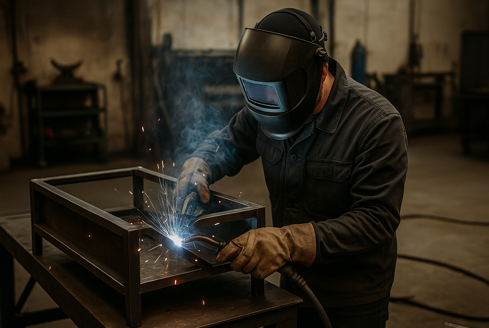
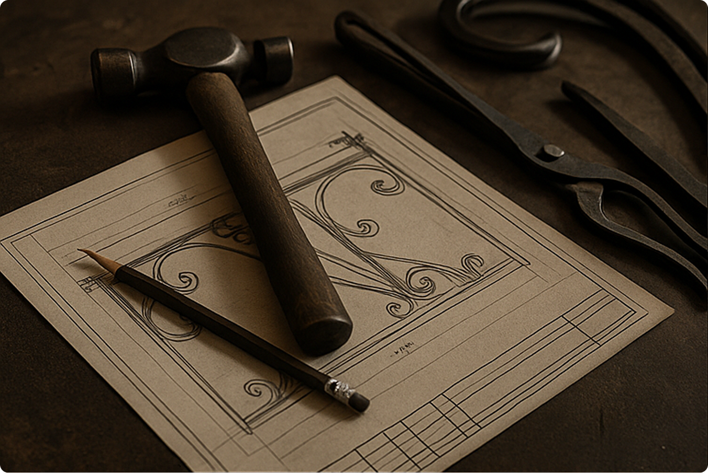
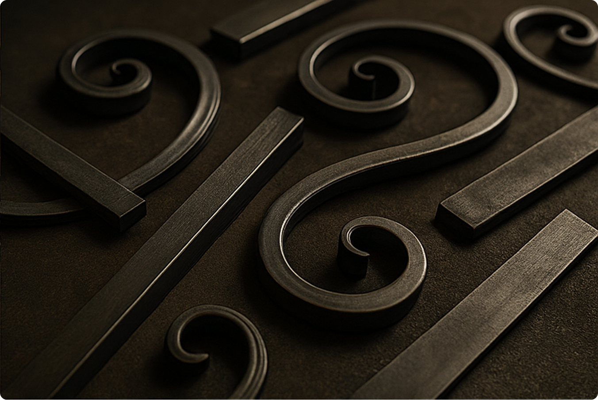
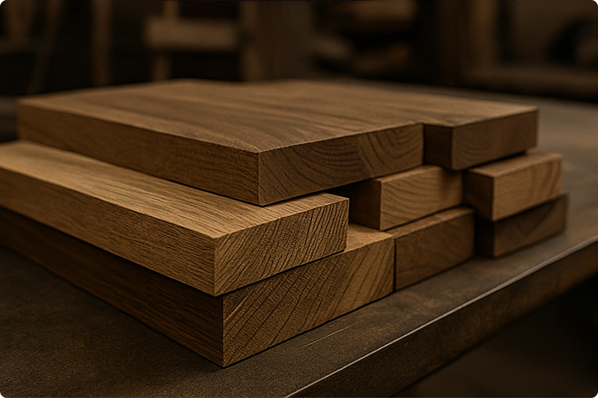
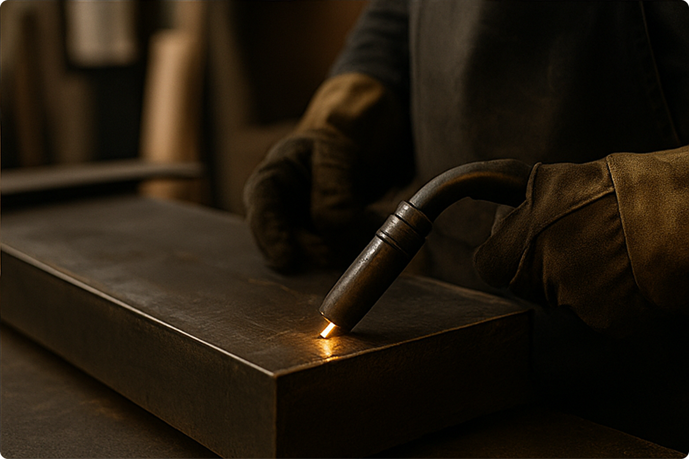

Дымская. Сделано на совесть.
С 2017 года создаём авторские изделия из металла и дерева для дома, сада и бани.
2017
Запуск мастерской под Тулой. Первые изделия — дровницы и кованые мангалы, сделанные вручную.
2018–2019
Расширение ассортимента: садовая мебель, флюгеры, печи. Первые постоянные клиенты и заказы «по чертежам».
2020
Доставка по всей России. Запуск розничных продаж через партнёров.
2021–2022
Собственный шоурум в Москве. Начало работы над фирменным стилем бренда.
2023–2024
Более 1000 выполненных заказов. Масштабирование производства, новые мастера в команде.
2025
Запуск интернет-магазина Дымская как основного канала продаж.
Наше производство
Каждое изделие проходит через руки мастеров. Мы используем только качественный металл
и дерево, создаём вручную — без конвейера. Современные технологии сочетаются
с ремесленным подходом.



